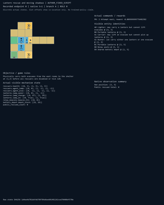
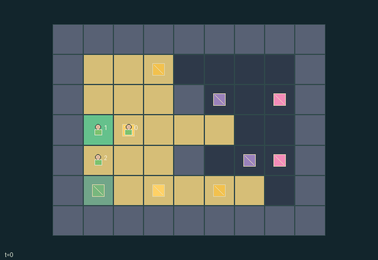

GI114 · Lantern rescue and moving shadows

Original recording scope: 角色视角 · Mode: 固定脚本演示
Additional generated state replay (different trajectory / full-state debug)

Physically carry both evacuees from the east rooms to the shelter at (1,3) before all rescuers are disabled or tick 128.
Identity and original contract
3 independently actionable roles; 10 discrete commands per role; 194 native observation columns per role; original horizon 128 steps. Declared per-step reward range: -1.0 to 11.0. Observation regime: partially_observable.
Source SHA-256: 16ebb97c9c761db5da08d58d3254d08995165d8b40b8c8222c044731c723a8ba
The objective, rewards, population, map and horizon remain original. A preview is not a success claim.
Objective and gameplay
Physically carry both evacuees from the east rooms to the shelter at (1,3) before all rescuers are disabled or tick 128.
Lantern and beacon illumination changes other roles visibility and the cells a loaded carrier can enter. Shared battery stock, exclusive bulky carrying, object competition, relay timing and moving dark hazards create action-dependent coordination.
- Carry both evacuees to the green shelter. A loaded carrier may enter only cells lit at the start of its step.
- Grounded or carried lit lanterns illuminate radius three through sampled clear cell rays. Lit relay posts provide the same radius.
- The lighter cannot carry evacuees; the carrier cannot pick up lanterns; the runner can carry either one bulky item.
- A lantern spends one battery unit each tick it is on. Recharging transfers up to eight units from the finite depot.
- Pulsing an adjacent relay spends four held-lantern units and gives twelve subsequent displayed illumination ticks.
- Moving shadows hurt unlit rescuers. A disabled rescuer drops its item; rescuers may share floor cells.
- Role views hide unseen cells and objects. The omniscient debug state is not a policy observation.
- This package is authored and statically screened only; no successful run or learning result is claimed.
Ending: Both evacuees rescued, or every rescuer has zero health; natural completion has priority over timeout on the same tick.
What this game explores
Resource commons & externalities: An action changes a persistent resource or burden that another role also encounters. Compare extraction with maintenance and record the downstream resource trajectory.
Joint transport & shared access: Positions, load geometry, occupancy and persistent access constrain whose action can succeed next. Distinguish physical handoff, shared controls and simultaneous force from a cosmetic cooperation label.
Survival, protection & rescue: Protection and repair alter another role's future feasible actions. Record losses, exposure, rescue and infrastructure as well as delivery; survival is determined by the actual kernel.
These are questions supported by rule structure, not observed learning effects.
Play it: operating walkthrough
crucibles play --game gi114Keep Python running and open its printed address. Select this game, set a seed and press Create session. The game itself is always English.
Assign a role range to Host with Assign / take over, or Assign all roles. Invite a second participant with Create player invitation, then assign a disjoint subset. Every original role is available.
For every owned role choose a legal command and press Queue. Arrow keys / WASD queue a declared directional action for the current role camera when available. Space or Advance one joint step advances everyone together. Non-directional games use the selectors.
Unqueued roles use the labelled untrained uniform-legal policy. Take over or release roles before the next step without resetting. Full-state debug is privileged and permanently logged; role cameras preserve permissions. Close the session to retain logs. Server restart does not restore sessions.
Complete command reference
IDs and English labels exactly match the manifest. Availability depends on role, resources, location and phase. An available action can still have no productive effect.
0·Wait
1·Attempt north
2·Attempt east
3·Attempt south
4·Attempt west
5·Pick up or ground a lantern
6·Lift or set down an evacuee
7·Toggle held lantern
8·Recharge held lantern from nearby shared depot
9·Spend four charge units to pulse a nearby relay
Roles and capability identifiers
These original role names describe capabilities, not interchangeable skins. Check each owned role's legal selector before planning handoffs.
agent_0·Lighter: may carry a lantern but cannot lift evacuees
agent_1·Carrier: may lift an evacuee but cannot pick up lanterns
agent_2·Runner: can carry either one lantern or one evacuee
Information and observation permissions
Each role sees its own status and public time/rescue totals. Current cell visibility uses a 17-sample rounded cell ray and Manhattan distance: radius one regardless of light, or radius four in illuminated cells. Shadows additionally require illumination. No other map cells, shadow phase, distant inventories or unseen object positions enter the role observation. Renderer uses the same visibility arrays.
The GIF is full-state debug and may reveal hidden entities or private state. Train on obs[agent], not the picture, state tree or another role's private row. Field slices and visibility are in the original manifest.
Reinforcement-learning integration
import jax
from crucibles_jaxmarl import make
env = make("gi114")
key = jax.random.PRNGKey(0)
key, rk, ak, sk = jax.random.split(key, 4)
obs, state = jax.jit(env.reset)(rk)
actions = env.sample_actions(ak, state)
obs, state, rewards, dones, info = jax.jit(env.step_env)(sk, state, actions)
done = dones["__all__"]Observations are float32 vectors of width 194; actions are scalar int32; masks have 10 entries. Supply all 3 roles each transition. Masked sampling is an engineering reference, not a trained learner.
step_env retains terminal data without reset. step performs outer autoreset and keeps terminal data in info["raw_state"] and info["raw_observation"]. Use dones["__all__"] for episode boundaries; separate completion, failure and time limit in analysis.
JIT or vmap equal identities and shapes. Split independent reset, policy and transition keys. Group different shapes explicitly; do not shrink the population or horizon. Host rendering stays outside training.
Training questions and fair evaluation
Define valid completion from the objective before fitting. Preserve original rewards and also report real deliveries/services, losses, resource state, unresolved episodes and per-role returns. Animation is not a reward signal.
An action changes a persistent resource or burden that another role also encounters. Compare extraction with maintenance and record the downstream resource trajectory.
Positions, load geometry, occupancy and persistent access constrain whose action can succeed next. Distinguish physical handoff, shared controls and simultaneous force from a cosmetic cooperation label.
Protection and repair alter another role's future feasible actions. Record losses, exposure, rescue and infrastructure as well as delivery; survival is determined by the actual kernel.
Compare memory, communication or centralized critics under matched actor information. Declare critic access; keep actor inputs role-filtered. Match partner/opponent distributions, masks, compute and checkpoint selection. Final tests never enter fitting or selection.
Independent training runs or source-pairing blocks are inferential units; episodes from one policy are not independent training replications. Save hashes, keys, versions, device, time and cost. Negative, zero, failed and indeterminate outcomes are valid. No trained checkpoint or target score is supplied.
Classification and evidence
Overlapping editorial labels are reading aids, not proof of novelty, difficulty, strategic equivalence or learning effects.
- Resource commons & externalities
- Evidence
manifest.task.objective: Physically carry both evacuees from the east rooms to the shelter at (1,3) before all rescuers are disabled or tick 128.
- Joint transport & shared access
- Evidence
manifest.task.objective: Physically carry both evacuees from the east rooms to the shelter at (1,3) before all rescuers are disabled or tick 128.
- Evidence
manifest.task.interaction: Lantern and beacon illumination changes other roles visibility and the cells a loaded carrier can enter. Shared battery stock, exclusive bulky carrying, object competition, relay timing and moving dark hazards create action-dependent coordination.
- Evidence
manifest.actions.6: Lift or set down an evacuee
- Survival, protection & rescue
- Evidence
manifest.task.objective: Physically carry both evacuees from the east rooms to the shelter at (1,3) before all rescuers are disabled or tick 128.
- Evidence
manifest.task.interaction: Lantern and beacon illumination changes other roles visibility and the cells a loaded carrier can enter. Shared battery stock, exclusive bulky carrying, object competition, relay timing and moving dark hazards create action-dependent coordination.
- Evidence
manifest.task.observation_access: Each role sees its own status and public time/rescue totals. Current cell visibility uses a 17-sample rounded cell ray and Manhattan distance: radius one regardless of light, or radius four in illuminated cells. Shadows additionally require illumination. No other map cells, shadow phase, distant inventories or unseen object positions enter the role observation. Renderer uses the same visibility arrays.
Source, receipts and preview limits
The additional generated state GIF replays saved untrained legal actions through the original kernel. At most 25 actual endpoints include initial and terminal state; no invented interpolation. It is full-state debug, not the role observation. Where an original scene preview exists, it is displayed first with its own recorded information scope. The two recordings may use different trajectories and views.
Original source, observation slices, manifest and mechanism
Native receipt · Presentation receipt
Engineering passes do not establish learning. Nonzero floating differences remain recorded and undetermined; no new tolerance was introduced. Human scores remain unverified.